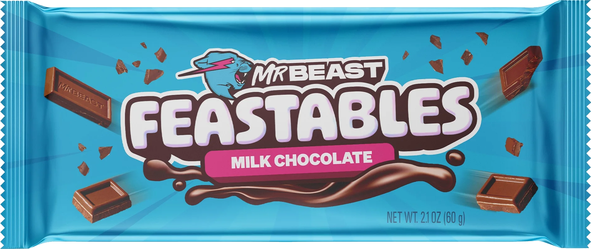

Impact on Smaller Creators
Smaller creators are facing increasing pressure to compete with high-budget productions like MrBeast’s. For many, it’s no longer enough to just create good content; the need to go viral by mimicking big-budget stunts is becoming essential. This trend has made it harder for creators with limited resources to gain traction, as they struggle to compete with the massive financial backing that defines today’s most successful YouTube channels.
The Beastification of Consumerism
Through his "Beast" empire, MrBeast has built a brand that goes beyond YouTube videos, selling everything from snacks to clothing. His influence over his young audience is so strong that many kids view his product endorsements as endorsements from a trusted friend, rather than as advertisements. With the immense success of his products like Feastables, he continues to push new merchandise to his audience through constant mentions in videos, further embedding consumerism in his content. This creates a cycle where children, who already idolize MrBeast, are subtly encouraged to buy products without fully understanding the marketing manipulation at play.
